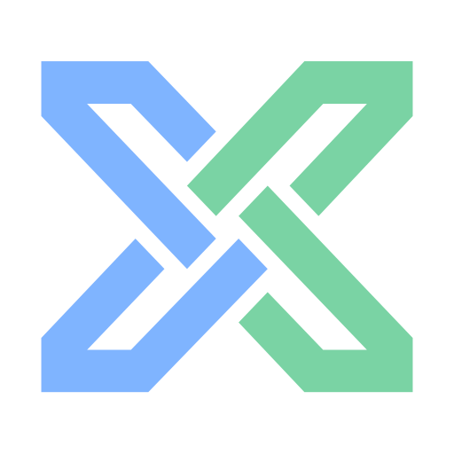
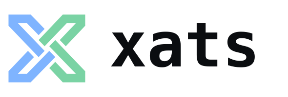
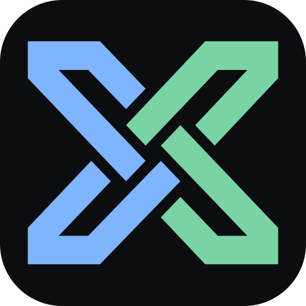

The xats brand kit.
Four connected routes. Different agents, equal peers. Download the SVG masters, outlined wordmarks, transparent PNGs, monochrome marks, app icons, and social card.
Download the complete brand packPrimary mark

SVG · Transparent PNG

Dark-surface wordmark
SVG · PNG

Light-surface wordmark

SVG · PNG

App icon

SVG · PNG

Brand colors
#7fb4ff#7ad3a4#0b0d10#f3f5f8Keep the proportions and the gaps between routes. Use a monochrome version when color is not available. All lettering is outlined, so the SVGs do not depend on a font installation. Read the usage notes.